Bom dia,
Sr. [NOME DO SEGURADO]
Segue abaixo a prestadora que realizará a troca do vidro [VIDRO]
[NOME DA PRESTADORA]
[ENDEREÇO]
[BAIRRO-UF]
REF: [PONTO DE REFERÊNCIA]
Telefone: [TELEFONES DA PRESTADORA] (Favor ligar para agendar)
VEÍCULO: [MARCA/MODELO]
PLACA: [PLACA]
ANO: [ANO]
COR: [COR]
Valor total de serviço: R$ [VALOR TOTAL]
Valor da MEGA (80%): R$ [VALOR MEGA]
Valor do ASSOCIADO (20%): R$ [VALOR ASSOCIADO] (INCLUSO MARCAÇÃO DE CHASSI, NÃO INCLUI A BORRACHA CASO SEJA NECESSÁRIA A TROCA).
MEGA SEGUROS
USO INTERNO
Cartilha de Troca de Vidro
Troca de vidro e reembolso — da verificação da cobertura até a projeção de pagamento. Guia interno de procedimentos Mega Seguros.
Parte I
Troca de Vidro — Autorização
Regras, documentos, cotação, e-mails, Hinova e planilha.
01
Regras e Visão Geral
Quanto a Mega paga
A Mega paga até 80% do valor de R$ 800,00 e o associado paga 20%.
● Se o valor passar dos R$ 800,00 (ex.: um vidro de mil reais), o segurado paga o valor que passar.
Com ou sem sensor de chuva
| Tipo | O que significa |
|---|---|
| Com sensor de chuva | Quando chove, o limpador vai automaticamente. |
| Sem sensor de chuva | Quando chove, é preciso levantar para limpar o vidro. |
Regras
- ● O associado não pode ter mais de três solicitações de vidro durante 1 ano.
- ● Se ele pagar o boleto depois do ocorrido, não tem direito à proteção.
- ● Verificar realmente se ele tem proteção para vidro.
- ● Se a pessoa morar longe e não tiver prestadora por perto, solicitar reembolso ao associado (ver Parte III).
Visão geral do fluxo
- 1 Preencher o formulário de autorização de troca de vidros, verificar as prestadoras mais próximas (entre duas ou três) e escolher o menor valor.
- 2 Verificar se ele pagou o boleto do mês.
- 3 Preencher o formulário de autorização financeira, assinar e entregar para a supervisão ou gerente assinar.
- 4 Montar dois e-mails: um para a prestadora autorizada e outro para o segurado, montando a autorização para troca de vidro.
- 5 Registrar no Hinova a autorização e informar ao segurado por WhatsApp.
- 6 Alimentar a planilha de troca de vidro.
Resumo
A Mega cobre 80% até R$ 800,00 e o associado paga 20% (e tudo que passar dos R$ 800,00). No máximo três solicitações de vidro por ano, e só tem direito quem estava com o boleto pago antes do ocorrido. O fluxo vai da cotação e autorização até os e-mails, o registro no Hinova e a planilha.
02
Documentação Necessária
- 1 Formulário de vidro todo preenchido
- 2 CRLV
- 3 CNH do condutor
- 4 Fotos do vidro danificado onde apareça a placa, no mínimo 4 fotos
- 5 Quando for empresa, mandar algum documento da empresa
Resumo
Formulário de vidro completo, CRLV, CNH do condutor e no mínimo 4 fotos do vidro danificado com a placa aparecendo. Se for empresa, também um documento da empresa.
03
Verificar Cobertura e Boleto do Mês
1 — Verificar realmente se possui cobertura
No Hinova, abrir o veículo e conferir nos Produtos se consta a cobertura de vidros.
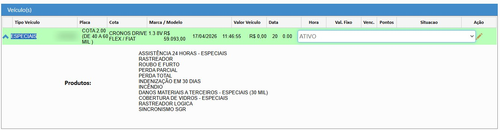
Produtos do veículo no Hinova, com a Cobertura de Vidros (placa borrada)
2 — Verificar se pagou o boleto do mês
● Se não pagou o boleto do mês, ou se não tiver pago nenhum, não poderá usar a cobertura.
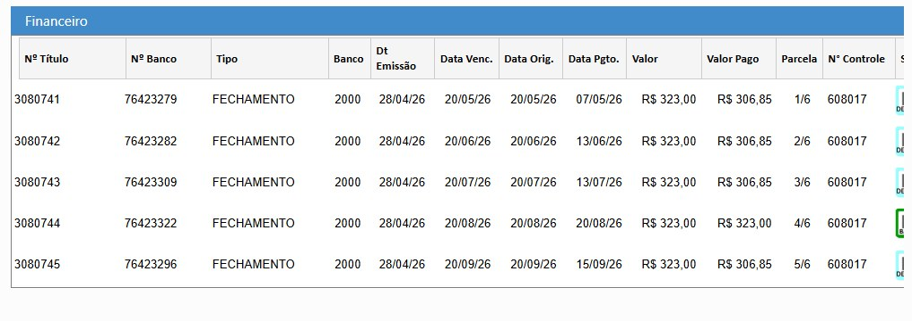
Financeiro no Hinova: boletos com data de vencimento e data de pagamento
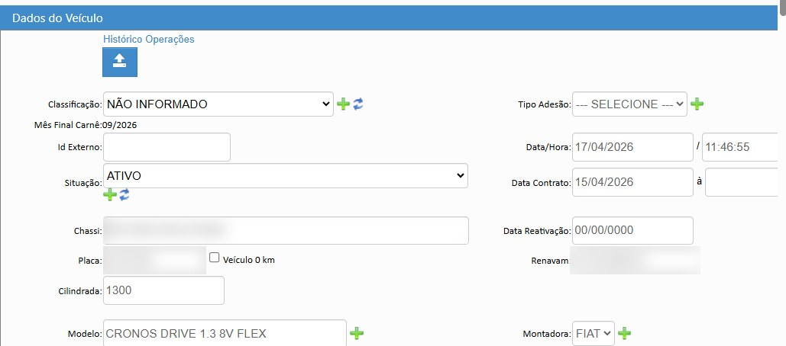
Dados do veículo no Hinova: situação, data do contrato e data/hora de adesão (dados do veículo borrados)
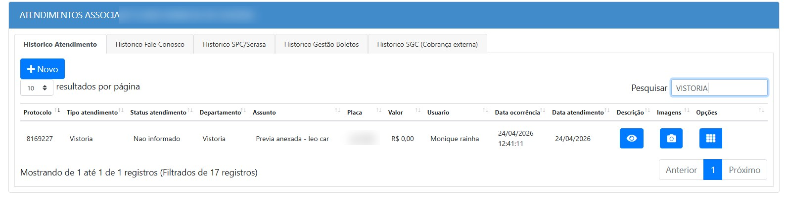
Histórico de atendimentos do associado no Hinova (nome e placa borrados)
Resumo
Antes de qualquer coisa, confirmar no Hinova que o veículo tem cobertura de vidros e que o boleto do mês está pago. Sem boleto pago, não pode usar a cobertura.
04
Cotação e Formulário de Autorização de Troca de Vidros
Cotação
- 1 Verificar onde o segurado mora e escolher as prestadoras perto.
- 2 Fazer cotação com a prestadora (entre duas ou três) e escolher sempre o menor valor.
Preenchimento do formulário
- 1 Verificar as informações do segurado e preencher conforme está pedindo.
- 2 De acordo com a prestadora escolhida, colocar as informações que o formulário pede.
- 3 Verificar essas informações para colocar na análise da autorização financeira.
Cálculo (exemplo)
| Item | Cálculo | Valor |
|---|---|---|
| Valor Mega (80%) | R$ 800,00 × 80% | R$ 640,00 |
| Valor Associado (20%) | R$ 800,00 × 20% | R$ 160,00 |
| Valor da transferência | Sempre o valor da Mega | R$ 640,00 |
Análise
- ● O plano sempre vai ser Prata.
- ● Em Abertos, sempre colocar nada.
- ● Em Obs, sempre colocar nada.
● Se o valor for mil reais e passar dos R$ 800,00, o segurado paga o valor que passar.
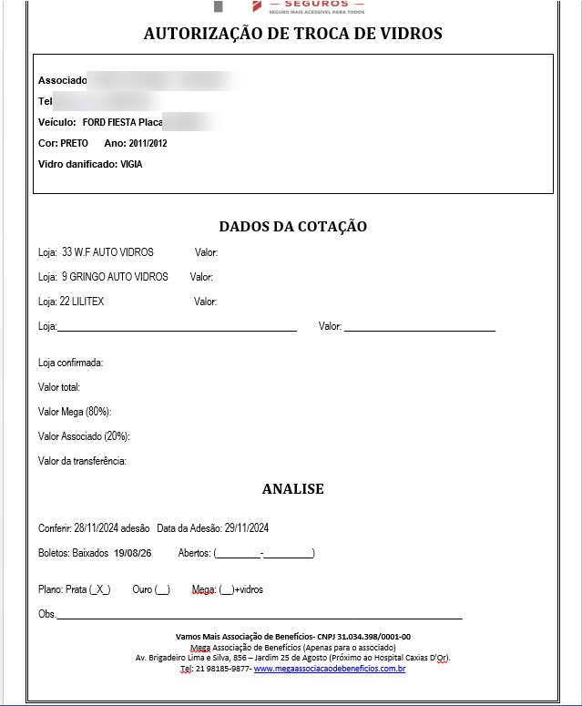
Formulário de Autorização de Troca de Vidros: dados do associado, dados da cotação e análise (dados pessoais borrados)
Resumo
Cotar com duas ou três prestadoras perto do segurado e ficar com o menor valor. No formulário, a Mega entra com 80%, o associado com 20%, e a transferência é sempre o valor da Mega. Na análise: plano Prata, Abertos e Obs sempre "nada".
05
E-mails de Autorização (Segurado e Prestadora)
1 — Pegar o modelo do e-mail
- 1 Sempre buscar no e-mail pelo nome da prestadora para pegar o exemplo do e-mail, no qual vai estar o endereço.
- 2 Copiar e colar o texto e mudar as informações do segurado.
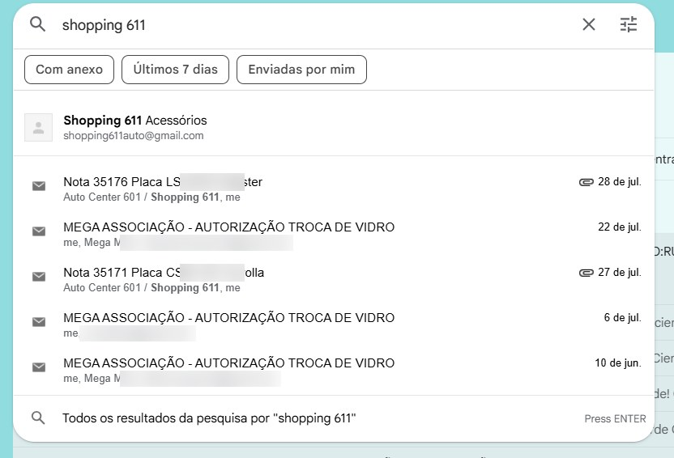
Busca no e-mail pelo nome da prestadora para achar um e-mail de autorização anterior (dados borrados)
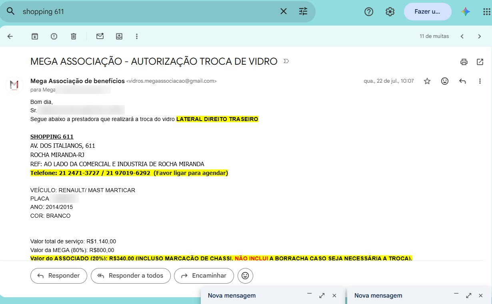
E-mail de autorização anterior usado como modelo, com o endereço da prestadora (dados borrados)
2 — E-mail para o segurado (modelo)
Assunto: MEGA SEGUROS - AUTORIZAÇÃO TROCA DE VIDRO
3 — E-mail para a prestadora (modelo)
Pegar o modelo de e-mail de autorização para prestadoras e informar o nome do segurado com telefone e as informações abaixo.
Assunto: MEGA SEGUROS - AUTORIZAÇÃO TROCA DE VIDRO // [NOME DO SEGURADO]
Bom dia, Prezados
Segue abaixo a autorização para troca do vidro [VIDRO]
ASSOCIADO: [NOME DO SEGURADO] - [TELEFONE]
VEÍCULO: [MARCA/MODELO]
PLACA: [PLACA]
ANO: [ANO]
COR: [COR]
Valor total de serviço: R$ [VALOR TOTAL]
Valor da MEGA (80%): R$ [VALOR MEGA]
Valor do ASSOCIADO (20%): R$ [VALOR ASSOCIADO] (INCLUSO MARCAÇÃO DE CHASSI, NÃO INCLUI A BORRACHA CASO SEJA NECESSÁRIA A TROCA).
Valor da transferência: R$ [VALOR MEGA]
Segue abaixo a autorização para troca do vidro [VIDRO]
ASSOCIADO: [NOME DO SEGURADO] - [TELEFONE]
VEÍCULO: [MARCA/MODELO]
PLACA: [PLACA]
ANO: [ANO]
COR: [COR]
Valor total de serviço: R$ [VALOR TOTAL]
Valor da MEGA (80%): R$ [VALOR MEGA]
Valor do ASSOCIADO (20%): R$ [VALOR ASSOCIADO] (INCLUSO MARCAÇÃO DE CHASSI, NÃO INCLUI A BORRACHA CASO SEJA NECESSÁRIA A TROCA).
Valor da transferência: R$ [VALOR MEGA]
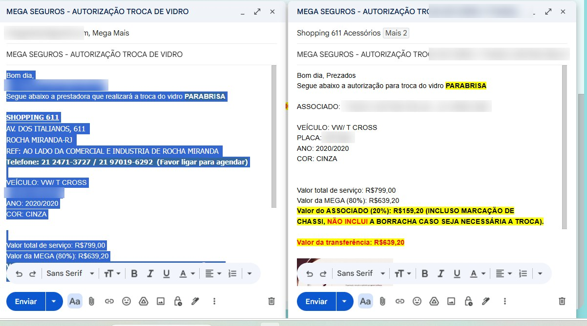
Os dois e-mails montados: à esquerda para o segurado, à direita para a prestadora (dados borrados)
Resumo
Buscar no e-mail pelo nome da prestadora para copiar um e-mail anterior (que já tem o endereço) e trocar os dados do segurado. São dois e-mails: um para o segurado com os dados da prestadora, e outro para a prestadora com o nome e telefone do segurado e o valor da transferência.
06
Enviar pelo WhatsApp e Registrar no Hinova
1 — Enviar a autorização ao segurado
- 1 Enviar a autorização por e-mail e por WhatsApp para o segurado.
- 2 No WhatsApp, enviar a autorização dele e copiar no e-mail também.
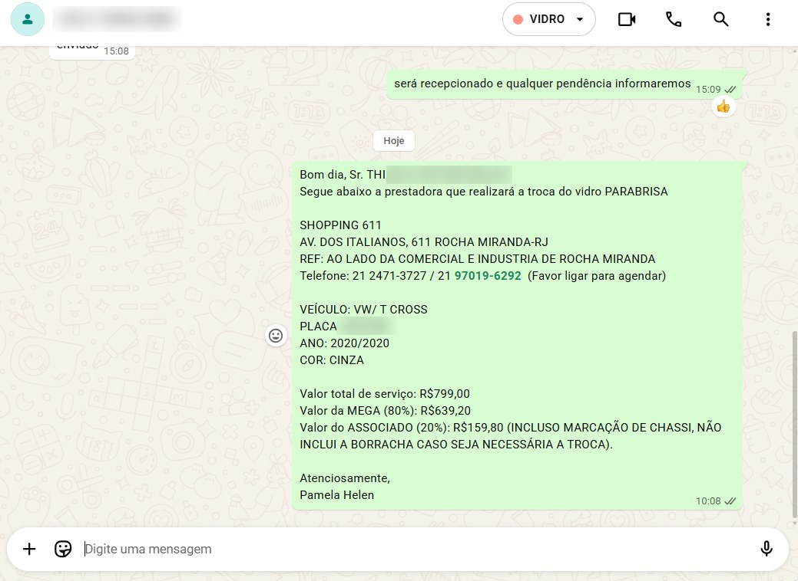
Autorização enviada ao segurado pelo WhatsApp (telefone, nome e placa borrados)
2 — Registrar no Hinova
Registrar no Hinova que enviou a autorização por e-mail e pelo WhatsApp.
Descrição do atendimento no Hinova (assunto: Autorização de Vidro)
Segurado informado por via whatsapp [TELEFONE] e por e-mail [E-MAIL] autorização para troca de vidro.
[COLAR ABAIXO O TEXTO DA AUTORIZAÇÃO ENVIADA AO SEGURADO]
[COLAR ABAIXO O TEXTO DA AUTORIZAÇÃO ENVIADA AO SEGURADO]
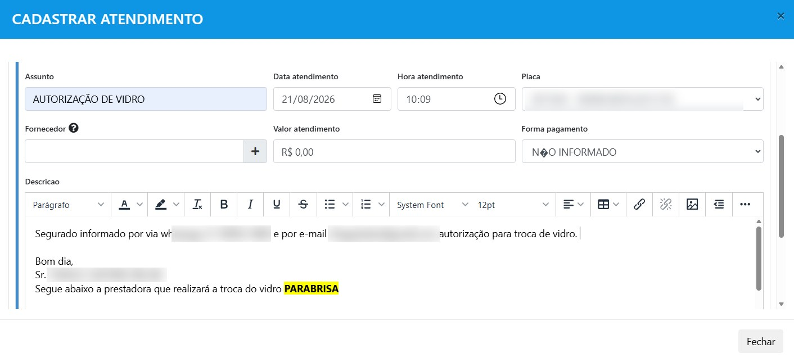
Cadastro do atendimento no Hinova com o assunto Autorização de Vidro (dados borrados)
Resumo
A autorização vai para o segurado por e-mail e por WhatsApp. Depois, registrar no Hinova um atendimento "Autorização de Vidro" informando que o segurado foi avisado pelos dois canais, colando o texto da autorização.
07
Autorização Financeira
- 1 Entrar na pasta de autorização e seguir pela prestadora escolhida.
- 2 Escrever as informações do segurado.
- 3 Feito isso, colocar na pasta para gerente ou supervisora assinar.
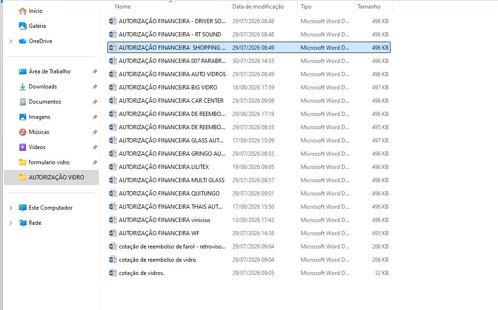
Pasta AUTORIZAÇÃO VIDRO: um modelo de autorização financeira por prestadora
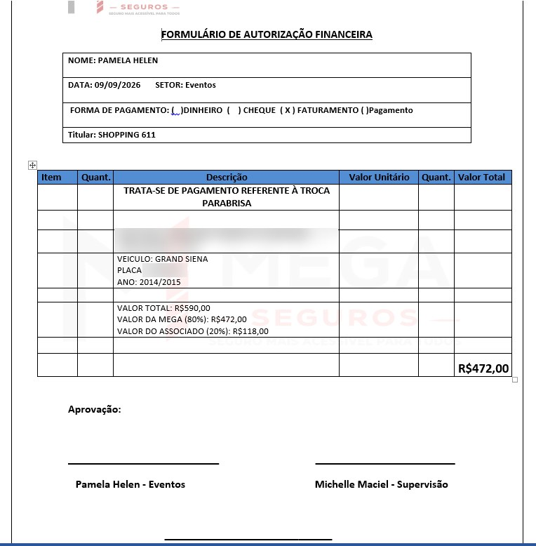
Formulário de Autorização Financeira preenchido para troca de vidro (dados do associado borrados)
Resumo
Cada prestadora tem seu modelo de autorização financeira na pasta AUTORIZAÇÃO VIDRO. Abrir o da prestadora escolhida, preencher os dados do segurado e deixar na pasta para a gerente ou supervisora assinar.
08
Preencher a Planilha de Vidros
- 1 Feito isso, preencher a planilha de vidros (aba Autorização Troca de Vidro).
- 2 Colocar as informações do segurado.
- 3 Aguardar as notas e boletos.
- 4 Recebidas as notas, colocar na planilha de projeção de vidro.
● Só vai pintar de roxo quando receber a nota e o boleto.
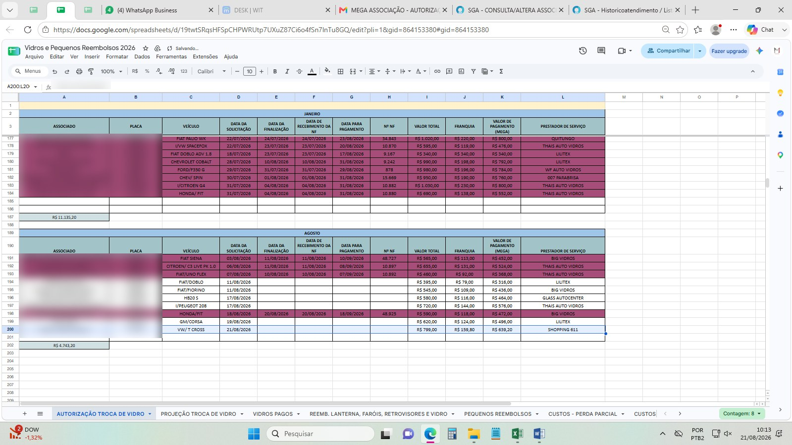
Planilha Vidros e Pequenos Reembolsos 2026, aba Autorização Troca de Vidro: em roxo, os que já receberam nota e boleto (associados e placas borrados)
Resumo
Lançar o segurado na aba Autorização Troca de Vidro e aguardar nota e boleto. A linha só é pintada de roxo quando os dois chegam, e aí vai para a projeção.
Parte II
Nota, Boleto e Projeção
Recebimento de nota e boleto e a projeção de todo dia 10.
09
Recebimento de Nota e Boleto
- 1 Imprimir dois boletos e duas notas: uma para a Caixa Box e outra para o Financeiro.
● A WF não manda boleto, apenas NF.
Financeiro
Colocar um post-it junto escrito o valor e a data de pagamento.
- ● Boleto
- ● Nota (DANFE)
- ● Autorização
Caixa Box
Na frente da nota, escrever "Caixa Box" e a placa.
- ● DANFE (nota)
- ● Boleto
- ● Formulário de autorização
Resumo
Imprimir duas vias de nota e boleto. O Financeiro recebe boleto, nota e autorização com post-it de valor e data de pagamento. A Caixa Box recebe nota, boleto e formulário de autorização, com "Caixa Box" e a placa escritos na frente da nota. A WF só manda NF.
10
Planilha Autorização Troca de Vidro
Quando a nota e o boleto chegarem, completar a linha do segurado:
- 1 Colocar a data de finalização a partir do dia que foi recebido
- 2 Data do recebimento da NF
- 3 Data do pagamento
- 4 Nº da NF
● Pintar a linha de roxo. Feito isso, colocar na planilha de projeção.
Resumo
Com nota e boleto recebidos, preencher data de finalização, data de recebimento da NF, data de pagamento e número da NF, pintar de roxo e levar para a projeção.
11
Projeção Todo Mês no Dia 10
- 1 Entrar na planilha de autorização, pegar todos os nomes em branco e colocar na projeção do mês.
- 2 Colocados os nomes, conferir na pasta de Financeiro se a planilha está em ordem de acordo com a pasta.
- 3 Feito tudo, imprimir duas folhas da projeção (em células selecionadas) e assinar as duas.
- 4 Super ou gerente assinar e entregar para o Financeiro assinar. Deixar uma na pasta e entregar a pasta junto com a projeção.
- 5 A segunda folha da projeção colocar na pasta de Projeção 2026 (fica na caixa azul, Caixa Box).
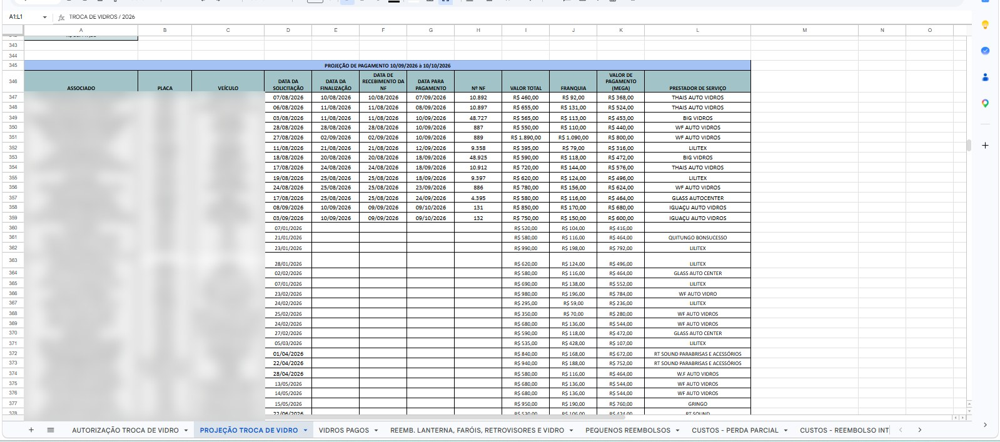
Aba Projeção Troca de Vidro, com o período de pagamento de 10 a 10 (associados e placas borrados)
Resumo
Todo dia 10, passar os nomes em branco da planilha de autorização para a projeção do mês, conferir com a pasta do Financeiro, imprimir e assinar duas folhas. Uma vai com a pasta para o Financeiro, a outra fica na pasta de Projeção 2026, na caixa azul.
Parte III
Reembolso
Quando não há prestadora por perto: reembolso ao associado.
12
Procedimento de Reembolso
Regras
- ● A Mega cobre até R$ 500,00: 70% o segurado e 30% a Mega.
- ● O associado não pode ter mais de DUAS solicitações de farol, lanterna e retrovisor durante 1 ano.
- ● Se ele pagar o boleto depois do ocorrido, não tem direito à proteção.
- ● Verificar realmente se ele tem proteção para reembolso.
Documentos necessários
- ● Formulário de reembolso
- ● CNH
- ● CRLV
- ● Nota de serviço (DANFE)
- ● Comprovante da conta (contendo agência e conta)
- ● Fotos do veículo danificado e consertado
Passo a passo
- 1 Preencher o formulário de reembolso e o formulário de autorização financeira.
- 2 Verificar os dados do segurado e, com atenção, colocar as informações necessárias.
- 3 Feito todo o procedimento, entregar para a supervisão assinar e para o Financeiro.
- 4 Registrar no Hinova a autorização aprovada e informar o segurado.
- 5 Alimentar a planilha de reembolso com as informações necessárias.
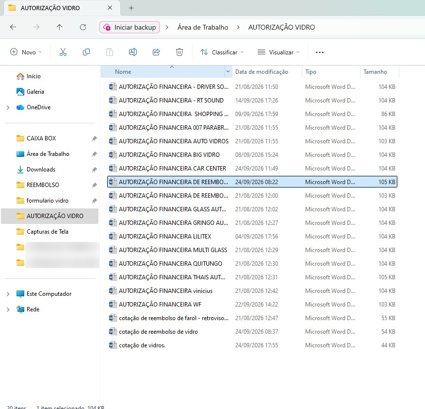
Pasta AUTORIZAÇÃO VIDRO com a autorização financeira de reembolso e as cotações de reembolso (nomes de pastas borrados)
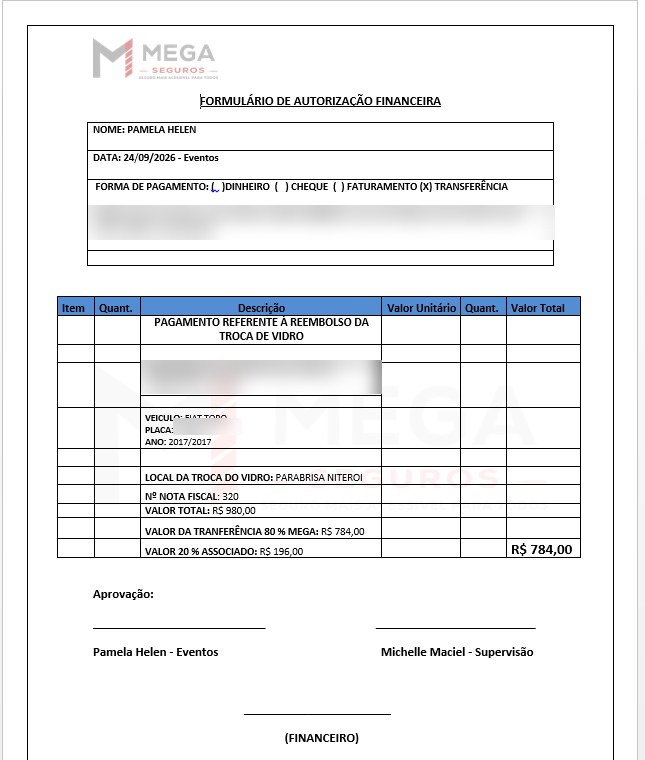
Autorização Financeira de reembolso de troca de vidro, com pagamento por transferência (dados bancários e do associado borrados)
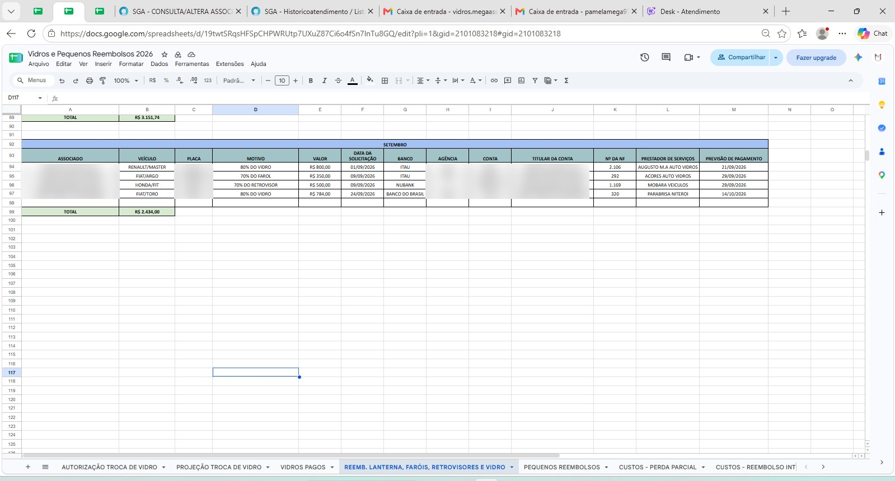
Aba Reemb. Lanterna, Faróis, Retrovisores e Vidro (associados, placas e dados bancários borrados)
Resumo
No reembolso, a Mega cobre até R$ 500,00, com limite de duas solicitações por ano para farol, lanterna e retrovisor. Com os documentos em mãos, preencher o formulário de reembolso e a autorização financeira, passar pela supervisão e pelo Financeiro, registrar no Hinova, avisar o segurado e lançar na planilha de reembolso.
13
Financeiro e Caixa Box — Reembolso
Financeiro
Post-it com a data do pagamento e o valor (15 dias úteis).
- ● Autorização (formulário financeiro)
- ● Autorização de reembolso
- ● Formulário de reembolso
- ● CNH
- ● Nota (DANFE)
- ● Comprovante da conta
Caixa Box — Reembolso
Escrever na frente o dia do pagamento e o valor (15 dias úteis).
- ● Formulário de autorização financeira
- ● Formulário de reembolso
- ● CNH
- ● CRLV
- ● Nota de serviço (DANFE)
- ● Comprovante da conta (contendo agência e conta)
- ● Fotos do veículo
Resumo
O pagamento do reembolso é em 15 dias úteis. O Financeiro recebe as autorizações, o formulário de reembolso, CNH, nota e comprovante da conta com post-it de data e valor. A Caixa Box recebe o conjunto completo, incluindo CRLV e fotos, com data e valor escritos na frente.
14
Mensagem de Reembolso para o Segurado
Registro no Hinova
Segurado informado por via WhatsApp [TELEFONE]
Mensagem pelo WhatsApp
Bom dia! Sr. [NOME DO SEGURADO] - [PLACA]
Venho através deste informar a autorização de reembolso do VIDRO
Valor a ser reembolsado: R$ [VALOR]
Previsão para pagamento: [DATA]
15 dias úteis a partir do envio da autorização
PAMELA HELEN
Venho através deste informar a autorização de reembolso do VIDRO
Valor a ser reembolsado: R$ [VALOR]
Previsão para pagamento: [DATA]
15 dias úteis a partir do envio da autorização
PAMELA HELEN
● A previsão de pagamento é de 15 dias úteis a partir do envio da autorização.
Resumo
Avisar o segurado pelo WhatsApp com nome, placa, o item reembolsado, o valor e a previsão de pagamento (15 dias úteis a partir do envio da autorização), e registrar no Hinova que ele foi informado.